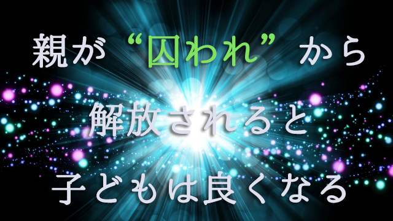

お母さん同士が集まると「いかに我が子がダメか」そのダメさ加減を競い合うような光景が展開される。「ウチの子全然勉強しなくて…」「あらウチの子だってそうよ。学校から帰ってもソファで寝そべってばかりで…」「ウチなんかスマホばっかいじって…」等々
学校の成績、日常の生活態度、交遊関係、迫り来る入学試験。子どもの心配はキリがない。
どうしてこんなに子どものことが心配になるのだろう。
親と話すと大体こんな話になる。
勉強しない→成績下がる→希望の（良い）学校に入れない→良い就職口がない→不安定な将来 それが心配。
要するに「子どもの現状」を見て「将来が心配」というお決まりのパターン。
だが、考えれば分かるように「子どもが熱心に勉強しない」ことと「将来の不幸」は何の関係もない。いわゆる有名大学を出ても幸福じゃない人はいくらでもいるし、さほど勉強できなかったのに社会生活は順調で幸せな人も大勢いる。
それなのになぜ子どもの将来を心配するのだろう。なぜ子どもの現状と将来をわざわざネガティブに結びつけて不安に思うのだろう。
結論を言うなら、子どもの現状に問題があるのではなく親の心の側の問題、すなわち親の潜在意識に子どもの現状を心配させる要因があるからだといえる。
潜在意識といっても多層構造になっていて、浅いレベルなら世間の常識や社会的ルールがある。こうすべきああすべき「～しないと困ることになる」という暗黙の掟のようなもの。先の例でいえば、良い学校→良い就職口などがそう。私たちが疑うこともなく信じ込んでいるもの―信念―だ。
さらに潜在意識の深い層の中には、前回話したような人類の普遍的な記憶ともいうべき根源レベルの情報（感情や思考）が流れている。それは言わばDNAに書き込まれている本能的な危険回避の警報装置のようなもの。
それは現状の中に「危険なものはないか」と探し回り、少しでもその徴候があれば早めに取り除こうという行動を促す。突きつめれば「死の恐怖」ということになる。
だから潜在意識にはこの根源的な死の恐怖（死を回避したい思い）と、世間の常識に従っていれば安全という社会的な規範意識の2つがあり私たちの考え、感情や行動を制御している。
そういう意味で潜在意識は私たちを守る働きをしている一方で、物事を悲観的に見る―真実をゆがめる―傾向があるといえる。
１
さてこれを子どもの教育に置き換えるとこう言えるだろう。
子どもが勉強しないとかゲームばかりやって将来が心配というのは、親であるあなたが心配しているというより潜在意識によって心配させられているということ。つまり潜在意識によって実際以上に悲観的な見方にさせられているということだ。
これに気づくことはとても大きい。なぜならその瞬間あなたの悩みは個人的な悩みではなくなるからだ。いわば親ならば誰でもがもつ普遍的な悩みに過ぎず、しかもオーバーに感じていただけと知るからだ。そう考えれば親であるあなたも少しは安心できるのではないだろうか。
私は40年以上子をもつ親と関わってきたが、当時も今も親の悩みは基本的にまったく変わっていない。マンガばかり読んで（テレビばかり観て）勉強しない→スマホゲームばかりやって勉強しない に変わったくらいで「このままでは将来心配」という物言いは同じだ。だが当の子どもたちは、ほとんどがちゃんと成長し心配のない人生を送っている。
つまりあなたもあなたの親から心配されていたわけで、だが今や立派な（⁉）大人となり親となった。それでもあなたがいま子どもを心配しアレコレ注意しているのなら親とまったく同じことを無意識的に繰り返していることになる。
また、セミナーや保護者会などで親に子どもの悩みをそれぞれ話してもらう機会があるが、カンのいい親は「皆同じことを悩んでいるのだ！」と気づくようで「少し安心しました」などと言う。
なぜ安心かというと、こんなことで悩んでいるのは自分だけだと思っていたのに皆同じようなことで悩んでいると知ったからだ。
つまり多少の個人差はあっても悩みの質そのものは変わらない。
個人的な悩みと考えていたものが意外と独自的なものではなく、普遍的なものであったという気づきがそこにある。
２
こうして見てくると「心配」を強制してくる潜在意識に操られないようにすることの大切さが分かってくる。
潜在意識は身を守るために常に先回りして将来への心配を仕掛けてくる。将来に備えようとする余り、たとえば子どもなら子どもの「今の姿」今のありのままの姿を見えにくくしてしまう。
今子どもは何を考えているか。
今子どもは何に悩み何に夢中か。
今子どもは何を必要としているか。
今子どもは親にどんな言葉をかけて欲しいと思っているのか。
そして今子どもは人生を楽しんでいるのか。
このように子どもの「今」を察知し、子どもの気持ちに寄り添うことは親子にとって貴重な瞬間だ。それは「今この瞬間」を大切にすることで得られる実りある体験である。先のことばかり考えて大切な今を取り逃してしまうなら非常に残念なことではないだろうか。親は子どもの将来を心配することが子を想うことだと信じ込んでいるが、それは違う。
単に潜在意識のワナにはまっているだけで、子どもの真の姿をとらえ損なっている意味ではむしろ親子関係にはマイナスなのだ。
前にも言ったが、子育ての期間は意外に短い。あっという間に過ぎ去るこの貴重な時間を無駄にしないこと。そのためには子どもを持てた喜びに感謝しつついま子育てを存分に楽しむことが何よりも健全な親子関係につながると理解すべきだ。
まさに「子育てを今楽しむこと」以上に大切なメッセージはないと確信している。
３
それに比べたら世間一般で言われている子育てに関する「こうすべき」「ああすべき」は、ほとんど根拠も正当性もない。難関校に行かなきゃ幸せになれないと同じくらい無意味な「常識」だ。
それらは潜在意識が見せる幻影に過ぎない。潜在意識に巣食う不安が「こうしなきゃ大変なことになる」という焦りを駆り立てている。だから潜在意識のワナから脱け出る方法は、まずこのことに気づくことにある。
具体的には不安や焦り、恐れを感じたらまずそれと一体化せず「これは本当に自分が感じているものなのか」と疑ってみる。本当に根拠のあるものなのか、それとも潜在意識が勝手にそう感じさせているものなのかと疑ってみる。多くの人は自分が不安や心配を感じるのは外側に原因があると思っているが、実際は潜在意識から浮かぶ不安が先にある。
不安が先にあって事後的に―後づけで―子どもが「勉強しないからだ」と原因づける。
子どもが勉強しないから→不安だ心配だではなく、不安で心配だから→子どもの勉強しないが気にかかるのだ。
このカラクリに気づけば潜在意識のワナから脱けられる。
心配不安は潜在意識が送りこむ感情で、現状の子どもの姿と直接関係していなかった。そう見方を逆転することで一変する。どう変わるのか。
多くの場合子どもの姿が愛しく映る。以前ならイライラさせられた子どもの言動にも、なぜか優しく見守る自分がいる。だが外見的には子どもの姿は変わっていない。相変わらずダラダラしていたり、スマホゲームに興じていたりする。しかし前ほど苛立ちや不安は感じない。そのうち子どもの様子も変化してくる。あれだけうるさく言わないと自分からやろうとしなかった日常の諸々を自らやり始めたりするのだ。
これは親がうるさく言わなくなったからだという表面的な話ではない。
親であるあなた自身が囚われから解放されたからだ。「このままでは将来が不安」などというありきたりの観念を手放したから、子どもも自由になった。
即ちあなたが潜在意識をクリーンにしたからそれまでせき止められていた、純粋な子どもへの愛があふれ出したというのが真相だ。
親子の間にある夾雑物は取り払われ、本来の自然な親子関係―純粋な愛と子育ての楽しみ―が姿を現したのだ。
するとどうなるか。
ある子どもは自発的に―親が特に口も出さなくても―ドンドン勉強するようになるだろうし、別の子はスポーツや趣味などに打ち込み始めるかも知れない。いずれにしても親子両方にとって最善の方向に進むことは間違いない。（私はこういう例をたくさん経験している）
なぜ子どもは自発的に、あるいは主体的に取り組むようになったのか。それは親であるあなたが潜在意識の操られ人形であることを止めたからだ。親が主体性を回復した以上、当然子どももそうなる。
あなたがあなたを囚われから解放するだけで良いのだ。それだけで子どもは自ら進むべき方向へ舵を切るだろう。
次回は8月22日掲載予定。